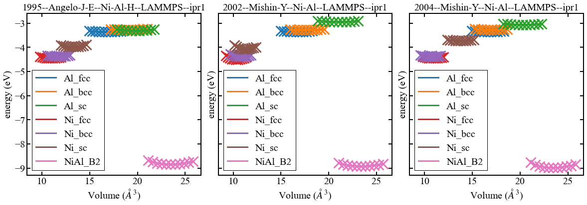
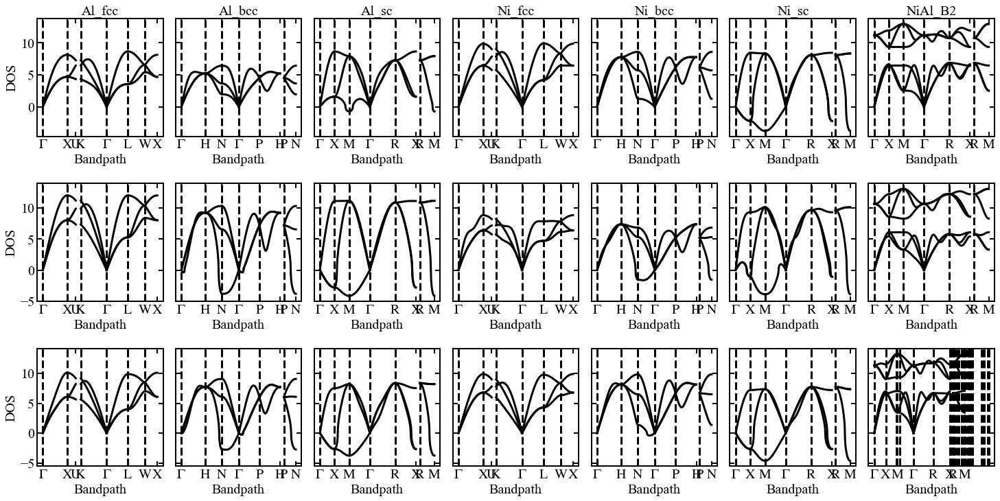

Workshop: From electrons to phase diagrams
Contents
Workshop: From electrons to phase diagrams#
Day 2: Validation of the potentials (draft)#
Import the fitted potentials for Li-Al ( from prevoius excercise)#
import numpy as np
import matplotlib.pylab as plt
import seaborn as sns
import pandas as pd
import time
time_start = time.process_time()
time_start
2.426196225
from pyiron_atomistics import Project
import pyiron_gpl
from ase.lattice.compounds import B2
from pyiron_atomistics import ase_to_pyiron
# from structdbrest import StructDBLightRester
# rest = StructDBLightRester(token="workshop2021")
import matplotlib.pylab as plt
import matplotlib as mpl
from matplotlib.patches import Rectangle
from matplotlib.colors import LogNorm, PowerNorm
linewidth = 3
axis_width = linewidth - 1
# Figure parameters
mpl.rcParams["figure.titlesize"] = 38
mpl.rcParams["figure.figsize"] = 10, 8
mpl.rcParams["figure.subplot.wspace"] = 0.6
mpl.rcParams["figure.subplot.hspace"] = 0.6
# Line parameters
mpl.rcParams['lines.linewidth'] = linewidth
mpl.rcParams['lines.markeredgewidth'] = linewidth
mpl.rcParams['lines.markersize'] = linewidth
# Font parameters
#mpl.rcParams['font.family'] = 'Times New Roman'
mpl.rcParams['font.family'] = 'Times New Roman'
mpl.rcParams['font.size'] = 20
# Latex params
#mpl.rcParams['text.usetex'] = True
# Axes parameters
mpl.rcParams['axes.linewidth'] = axis_width
mpl.rcParams['axes.titlesize'] = 20
mpl.rcParams['axes.labelsize'] = 20
# Tick parameters
mpl.rcParams["xtick.top"] = True
mpl.rcParams["xtick.major.size"] = 2 * linewidth + 1
mpl.rcParams["xtick.minor.size"] = linewidth
mpl.rcParams["xtick.major.width"] = axis_width
mpl.rcParams["xtick.labelsize"] = 20
mpl.rcParams["xtick.direction"] = "in"
mpl.rcParams["ytick.right"] = True
mpl.rcParams["ytick.major.size"] = 2 * linewidth + 1
mpl.rcParams["ytick.minor.size"] = linewidth
mpl.rcParams["ytick.major.width"] = axis_width
mpl.rcParams["ytick.labelsize"] = 20
mpl.rcParams["ytick.direction"] = "in"
# Grid parameters
mpl.rcParams["grid.linewidth"] = axis_width ## in points
# Legend parameters
mpl.rcParams["legend.framealpha"] = 1
mpl.rcParams["legend.edgecolor"] = "k"
mpl.rcParams["legend.fancybox"] = False
mpl.rcParams["legend.fontsize"] = 20
# Mathtext parameters parameters
mpl.rcParams["mathtext.fontset"] = "stix"
#del mpl.font_manager.weight_dict['roman']
#mpl.font_manager._rebuild()
pr = Project("validation_test")
####pr.remove_jobs(silently=True, recursive=True)
##########! rm -rf validation_test
Generate list of potentials (after fitting)#
dummy = pr.create.job.Lammps("dummy")
dummy.structure = pr.create_ase_bulk("Al", cubic=True)
dummy.structure[0] = "Ni"
potential_list = dummy.list_potentials()[:3]
potential_list
['1995--Angelo-J-E--Ni-Al-H--LAMMPS--ipr1',
'2002--Mishin-Y--Ni-Al--LAMMPS--ipr1',
'2004--Mishin-Y--Ni-Al--LAMMPS--ipr1']
Iterate over all potentials and all possible phases#
struct_dict = dict()
struct_dict["Al"] = dict()
struct_dict["Al"]["s_murn"] = ["fcc", "bcc", "sc"]
struct_dict["Al"]["a"] = 4.04
struct_dict["Ni"] = dict()
struct_dict["Ni"]["s_murn"] = ["fcc", "bcc", "sc"]
struct_dict["Ni"]["a"] = 3.5
struct_dict["NiAl"] = dict()
struct_dict["NiAl"]["s_murn"] = ["B2"]
struct_dict["NiAl"]["a"] = 3.7
struct_dict
{'Al': {'s_murn': ['fcc', 'bcc', 'sc'], 'a': 4.04},
'Ni': {'s_murn': ['fcc', 'bcc', 'sc'], 'a': 3.5},
'NiAl': {'s_murn': ['B2'], 'a': 3.7}}
def clean_project_name(name):
return name.replace("-", "_").replace(".", "_")
Ground state: E-V curves#
for pot in potential_list:
with pr.open(clean_project_name(pot)) as pr_pot:
for compound, compound_dict in struct_dict.items():
for crys_structure in compound_dict["s_murn"]:
# Relax structure
if crys_structure == "B2":
basis = ase_to_pyiron(B2(["Ni", "Al"], latticeconstant=compound_dict["a"]))
else:
basis = pr_pot.create_ase_bulk(compound, crys_structure, a=compound_dict["a"])
job_relax = pr_pot.create_job(pr_pot.job_type.Lammps, f"{compound}_{crys_structure}_relax", delete_existing_job=True)
job_relax.structure = basis
job_relax.potential = pot
job_relax.calc_minimize(pressure=0)
job_relax.run()
# Murnaghan
job_ref = pr_pot.create_job(pr_pot.job_type.Lammps, f"ref_job_{compound}_{crys_structure}")
job_ref.structure = job_relax.get_structure(-1)
job_ref.potential = pot
job_ref.calc_minimize()
murn_job = job_ref.create_job(pr_pot.job_type.Murnaghan, f"murn_job_{compound}_{crys_structure}")
murn_job.input["vol_range"] = 0.1
murn_job.run()
The job Al_fcc_relax was saved and received the ID: 16677135
The job murn_job_Al_fcc was saved and received the ID: 16677136
The job murn_job_Al_fcc_0_9 was saved and received the ID: 16677137
The job murn_job_Al_fcc_0_92 was saved and received the ID: 16677138
The job murn_job_Al_fcc_0_94 was saved and received the ID: 16677139
The job murn_job_Al_fcc_0_96 was saved and received the ID: 16677140
The job murn_job_Al_fcc_0_98 was saved and received the ID: 16677141
The job murn_job_Al_fcc_1_0 was saved and received the ID: 16677142
The job murn_job_Al_fcc_1_02 was saved and received the ID: 16677143
The job murn_job_Al_fcc_1_04 was saved and received the ID: 16677144
The job murn_job_Al_fcc_1_06 was saved and received the ID: 16677145
The job murn_job_Al_fcc_1_08 was saved and received the ID: 16677146
The job murn_job_Al_fcc_1_1 was saved and received the ID: 16677147
The job Al_bcc_relax was saved and received the ID: 16677148
The job murn_job_Al_bcc was saved and received the ID: 16677149
The job murn_job_Al_bcc_0_9 was saved and received the ID: 16677150
The job murn_job_Al_bcc_0_92 was saved and received the ID: 16677151
The job murn_job_Al_bcc_0_94 was saved and received the ID: 16677152
The job murn_job_Al_bcc_0_96 was saved and received the ID: 16677153
The job murn_job_Al_bcc_0_98 was saved and received the ID: 16677154
The job murn_job_Al_bcc_1_0 was saved and received the ID: 16677155
The job murn_job_Al_bcc_1_02 was saved and received the ID: 16677156
The job murn_job_Al_bcc_1_04 was saved and received the ID: 16677157
The job murn_job_Al_bcc_1_06 was saved and received the ID: 16677158
The job murn_job_Al_bcc_1_08 was saved and received the ID: 16677159
The job murn_job_Al_bcc_1_1 was saved and received the ID: 16677160
The job Al_sc_relax was saved and received the ID: 16677161
The job murn_job_Al_sc was saved and received the ID: 16677162
The job murn_job_Al_sc_0_9 was saved and received the ID: 16677163
The job murn_job_Al_sc_0_92 was saved and received the ID: 16677164
The job murn_job_Al_sc_0_94 was saved and received the ID: 16677165
The job murn_job_Al_sc_0_96 was saved and received the ID: 16677166
The job murn_job_Al_sc_0_98 was saved and received the ID: 16677167
The job murn_job_Al_sc_1_0 was saved and received the ID: 16677168
The job murn_job_Al_sc_1_02 was saved and received the ID: 16677169
The job murn_job_Al_sc_1_04 was saved and received the ID: 16677170
The job murn_job_Al_sc_1_06 was saved and received the ID: 16677171
The job murn_job_Al_sc_1_08 was saved and received the ID: 16677172
The job murn_job_Al_sc_1_1 was saved and received the ID: 16677173
The job Ni_fcc_relax was saved and received the ID: 16677174
The job murn_job_Ni_fcc was saved and received the ID: 16677175
The job murn_job_Ni_fcc_0_9 was saved and received the ID: 16677176
The job murn_job_Ni_fcc_0_92 was saved and received the ID: 16677177
The job murn_job_Ni_fcc_0_94 was saved and received the ID: 16677178
The job murn_job_Ni_fcc_0_96 was saved and received the ID: 16677179
The job murn_job_Ni_fcc_0_98 was saved and received the ID: 16677180
The job murn_job_Ni_fcc_1_0 was saved and received the ID: 16677181
The job murn_job_Ni_fcc_1_02 was saved and received the ID: 16677182
The job murn_job_Ni_fcc_1_04 was saved and received the ID: 16677183
The job murn_job_Ni_fcc_1_06 was saved and received the ID: 16677184
The job murn_job_Ni_fcc_1_08 was saved and received the ID: 16677185
The job murn_job_Ni_fcc_1_1 was saved and received the ID: 16677186
The job Ni_bcc_relax was saved and received the ID: 16677187
The job murn_job_Ni_bcc was saved and received the ID: 16677188
The job murn_job_Ni_bcc_0_9 was saved and received the ID: 16677189
The job murn_job_Ni_bcc_0_92 was saved and received the ID: 16677190
The job murn_job_Ni_bcc_0_94 was saved and received the ID: 16677191
The job murn_job_Ni_bcc_0_96 was saved and received the ID: 16677192
The job murn_job_Ni_bcc_0_98 was saved and received the ID: 16677193
The job murn_job_Ni_bcc_1_0 was saved and received the ID: 16677194
The job murn_job_Ni_bcc_1_02 was saved and received the ID: 16677195
The job murn_job_Ni_bcc_1_04 was saved and received the ID: 16677196
The job murn_job_Ni_bcc_1_06 was saved and received the ID: 16677197
The job murn_job_Ni_bcc_1_08 was saved and received the ID: 16677198
The job murn_job_Ni_bcc_1_1 was saved and received the ID: 16677200
The job Ni_sc_relax was saved and received the ID: 16677201
The job murn_job_Ni_sc was saved and received the ID: 16677202
The job murn_job_Ni_sc_0_9 was saved and received the ID: 16677203
The job murn_job_Ni_sc_0_92 was saved and received the ID: 16677204
The job murn_job_Ni_sc_0_94 was saved and received the ID: 16677205
The job murn_job_Ni_sc_0_96 was saved and received the ID: 16677207
The job murn_job_Ni_sc_0_98 was saved and received the ID: 16677208
The job murn_job_Ni_sc_1_0 was saved and received the ID: 16677209
The job murn_job_Ni_sc_1_02 was saved and received the ID: 16677210
The job murn_job_Ni_sc_1_04 was saved and received the ID: 16677211
The job murn_job_Ni_sc_1_06 was saved and received the ID: 16677212
The job murn_job_Ni_sc_1_08 was saved and received the ID: 16677213
The job murn_job_Ni_sc_1_1 was saved and received the ID: 16677214
The job NiAl_B2_relax was saved and received the ID: 16677215
The job murn_job_NiAl_B2 was saved and received the ID: 16677216
The job murn_job_NiAl_B2_0_9 was saved and received the ID: 16677217
The job murn_job_NiAl_B2_0_92 was saved and received the ID: 16677218
The job murn_job_NiAl_B2_0_94 was saved and received the ID: 16677219
The job murn_job_NiAl_B2_0_96 was saved and received the ID: 16677220
The job murn_job_NiAl_B2_0_98 was saved and received the ID: 16677221
The job murn_job_NiAl_B2_1_0 was saved and received the ID: 16677222
The job murn_job_NiAl_B2_1_02 was saved and received the ID: 16677223
The job murn_job_NiAl_B2_1_04 was saved and received the ID: 16677224
The job murn_job_NiAl_B2_1_06 was saved and received the ID: 16677225
The job murn_job_NiAl_B2_1_08 was saved and received the ID: 16677226
The job murn_job_NiAl_B2_1_1 was saved and received the ID: 16677227
The job Al_fcc_relax was saved and received the ID: 16677228
The job murn_job_Al_fcc was saved and received the ID: 16677229
The job murn_job_Al_fcc_0_9 was saved and received the ID: 16677230
The job murn_job_Al_fcc_0_92 was saved and received the ID: 16677231
The job murn_job_Al_fcc_0_94 was saved and received the ID: 16677232
The job murn_job_Al_fcc_0_96 was saved and received the ID: 16677233
The job murn_job_Al_fcc_0_98 was saved and received the ID: 16677234
The job murn_job_Al_fcc_1_0 was saved and received the ID: 16677235
The job murn_job_Al_fcc_1_02 was saved and received the ID: 16677236
The job murn_job_Al_fcc_1_04 was saved and received the ID: 16677237
The job murn_job_Al_fcc_1_06 was saved and received the ID: 16677238
The job murn_job_Al_fcc_1_08 was saved and received the ID: 16677239
The job murn_job_Al_fcc_1_1 was saved and received the ID: 16677240
The job Al_bcc_relax was saved and received the ID: 16677241
The job murn_job_Al_bcc was saved and received the ID: 16677242
The job murn_job_Al_bcc_0_9 was saved and received the ID: 16677243
The job murn_job_Al_bcc_0_92 was saved and received the ID: 16677244
The job murn_job_Al_bcc_0_94 was saved and received the ID: 16677245
The job murn_job_Al_bcc_0_96 was saved and received the ID: 16677246
The job murn_job_Al_bcc_0_98 was saved and received the ID: 16677247
The job murn_job_Al_bcc_1_0 was saved and received the ID: 16677248
The job murn_job_Al_bcc_1_02 was saved and received the ID: 16677249
The job murn_job_Al_bcc_1_04 was saved and received the ID: 16677250
The job murn_job_Al_bcc_1_06 was saved and received the ID: 16677251
The job murn_job_Al_bcc_1_08 was saved and received the ID: 16677252
The job murn_job_Al_bcc_1_1 was saved and received the ID: 16677253
The job Al_sc_relax was saved and received the ID: 16677254
The job murn_job_Al_sc was saved and received the ID: 16677255
The job murn_job_Al_sc_0_9 was saved and received the ID: 16677256
The job murn_job_Al_sc_0_92 was saved and received the ID: 16677257
The job murn_job_Al_sc_0_94 was saved and received the ID: 16677258
The job murn_job_Al_sc_0_96 was saved and received the ID: 16677259
The job murn_job_Al_sc_0_98 was saved and received the ID: 16677260
The job murn_job_Al_sc_1_0 was saved and received the ID: 16677261
The job murn_job_Al_sc_1_02 was saved and received the ID: 16677262
The job murn_job_Al_sc_1_04 was saved and received the ID: 16677263
The job murn_job_Al_sc_1_06 was saved and received the ID: 16677264
The job murn_job_Al_sc_1_08 was saved and received the ID: 16677265
The job murn_job_Al_sc_1_1 was saved and received the ID: 16677266
The job Ni_fcc_relax was saved and received the ID: 16677267
The job murn_job_Ni_fcc was saved and received the ID: 16677268
The job murn_job_Ni_fcc_0_9 was saved and received the ID: 16677269
The job murn_job_Ni_fcc_0_92 was saved and received the ID: 16677270
The job murn_job_Ni_fcc_0_94 was saved and received the ID: 16677271
The job murn_job_Ni_fcc_0_96 was saved and received the ID: 16677272
The job murn_job_Ni_fcc_0_98 was saved and received the ID: 16677273
The job murn_job_Ni_fcc_1_0 was saved and received the ID: 16677274
The job murn_job_Ni_fcc_1_02 was saved and received the ID: 16677275
The job murn_job_Ni_fcc_1_04 was saved and received the ID: 16677276
The job murn_job_Ni_fcc_1_06 was saved and received the ID: 16677277
The job murn_job_Ni_fcc_1_08 was saved and received the ID: 16677278
The job murn_job_Ni_fcc_1_1 was saved and received the ID: 16677279
The job Ni_bcc_relax was saved and received the ID: 16677280
The job murn_job_Ni_bcc was saved and received the ID: 16677281
The job murn_job_Ni_bcc_0_9 was saved and received the ID: 16677282
The job murn_job_Ni_bcc_0_92 was saved and received the ID: 16677284
The job murn_job_Ni_bcc_0_94 was saved and received the ID: 16677285
The job murn_job_Ni_bcc_0_96 was saved and received the ID: 16677287
The job murn_job_Ni_bcc_0_98 was saved and received the ID: 16677288
The job murn_job_Ni_bcc_1_0 was saved and received the ID: 16677289
The job murn_job_Ni_bcc_1_02 was saved and received the ID: 16677290
The job murn_job_Ni_bcc_1_04 was saved and received the ID: 16677291
The job murn_job_Ni_bcc_1_06 was saved and received the ID: 16677292
The job murn_job_Ni_bcc_1_08 was saved and received the ID: 16677293
The job murn_job_Ni_bcc_1_1 was saved and received the ID: 16677294
The job Ni_sc_relax was saved and received the ID: 16677295
The job murn_job_Ni_sc was saved and received the ID: 16677296
The job murn_job_Ni_sc_0_9 was saved and received the ID: 16677297
The job murn_job_Ni_sc_0_92 was saved and received the ID: 16677298
The job murn_job_Ni_sc_0_94 was saved and received the ID: 16677299
The job murn_job_Ni_sc_0_96 was saved and received the ID: 16677300
The job murn_job_Ni_sc_0_98 was saved and received the ID: 16677301
The job murn_job_Ni_sc_1_0 was saved and received the ID: 16677302
The job murn_job_Ni_sc_1_02 was saved and received the ID: 16677303
The job murn_job_Ni_sc_1_04 was saved and received the ID: 16677304
The job murn_job_Ni_sc_1_06 was saved and received the ID: 16677305
The job murn_job_Ni_sc_1_08 was saved and received the ID: 16677306
The job murn_job_Ni_sc_1_1 was saved and received the ID: 16677307
The job NiAl_B2_relax was saved and received the ID: 16677308
The job murn_job_NiAl_B2 was saved and received the ID: 16677309
The job murn_job_NiAl_B2_0_9 was saved and received the ID: 16677310
The job murn_job_NiAl_B2_0_92 was saved and received the ID: 16677311
The job murn_job_NiAl_B2_0_94 was saved and received the ID: 16677312
The job murn_job_NiAl_B2_0_96 was saved and received the ID: 16677313
The job murn_job_NiAl_B2_0_98 was saved and received the ID: 16677314
The job murn_job_NiAl_B2_1_0 was saved and received the ID: 16677315
The job murn_job_NiAl_B2_1_02 was saved and received the ID: 16677316
The job murn_job_NiAl_B2_1_04 was saved and received the ID: 16677317
The job murn_job_NiAl_B2_1_06 was saved and received the ID: 16677318
The job murn_job_NiAl_B2_1_08 was saved and received the ID: 16677319
The job murn_job_NiAl_B2_1_1 was saved and received the ID: 16677320
The job Al_fcc_relax was saved and received the ID: 16677321
The job murn_job_Al_fcc was saved and received the ID: 16677322
The job murn_job_Al_fcc_0_9 was saved and received the ID: 16677323
The job murn_job_Al_fcc_0_92 was saved and received the ID: 16677324
The job murn_job_Al_fcc_0_94 was saved and received the ID: 16677325
The job murn_job_Al_fcc_0_96 was saved and received the ID: 16677326
The job murn_job_Al_fcc_0_98 was saved and received the ID: 16677327
The job murn_job_Al_fcc_1_0 was saved and received the ID: 16677328
The job murn_job_Al_fcc_1_02 was saved and received the ID: 16677329
The job murn_job_Al_fcc_1_04 was saved and received the ID: 16677330
The job murn_job_Al_fcc_1_06 was saved and received the ID: 16677331
The job murn_job_Al_fcc_1_08 was saved and received the ID: 16677332
The job murn_job_Al_fcc_1_1 was saved and received the ID: 16677333
The job Al_bcc_relax was saved and received the ID: 16677334
The job murn_job_Al_bcc was saved and received the ID: 16677335
The job murn_job_Al_bcc_0_9 was saved and received the ID: 16677336
The job murn_job_Al_bcc_0_92 was saved and received the ID: 16677337
The job murn_job_Al_bcc_0_94 was saved and received the ID: 16677338
The job murn_job_Al_bcc_0_96 was saved and received the ID: 16677339
The job murn_job_Al_bcc_0_98 was saved and received the ID: 16677340
The job murn_job_Al_bcc_1_0 was saved and received the ID: 16677341
The job murn_job_Al_bcc_1_02 was saved and received the ID: 16677342
The job murn_job_Al_bcc_1_04 was saved and received the ID: 16677343
The job murn_job_Al_bcc_1_06 was saved and received the ID: 16677344
The job murn_job_Al_bcc_1_08 was saved and received the ID: 16677345
The job murn_job_Al_bcc_1_1 was saved and received the ID: 16677346
The job Al_sc_relax was saved and received the ID: 16677347
The job murn_job_Al_sc was saved and received the ID: 16677348
The job murn_job_Al_sc_0_9 was saved and received the ID: 16677349
The job murn_job_Al_sc_0_92 was saved and received the ID: 16677350
The job murn_job_Al_sc_0_94 was saved and received the ID: 16677351
The job murn_job_Al_sc_0_96 was saved and received the ID: 16677352
The job murn_job_Al_sc_0_98 was saved and received the ID: 16677353
The job murn_job_Al_sc_1_0 was saved and received the ID: 16677354
The job murn_job_Al_sc_1_02 was saved and received the ID: 16677355
The job murn_job_Al_sc_1_04 was saved and received the ID: 16677356
The job murn_job_Al_sc_1_06 was saved and received the ID: 16677357
The job murn_job_Al_sc_1_08 was saved and received the ID: 16677358
The job murn_job_Al_sc_1_1 was saved and received the ID: 16677359
The job Ni_fcc_relax was saved and received the ID: 16677360
The job murn_job_Ni_fcc was saved and received the ID: 16677361
The job murn_job_Ni_fcc_0_9 was saved and received the ID: 16677362
The job murn_job_Ni_fcc_0_92 was saved and received the ID: 16677363
The job murn_job_Ni_fcc_0_94 was saved and received the ID: 16677364
The job murn_job_Ni_fcc_0_96 was saved and received the ID: 16677365
The job murn_job_Ni_fcc_0_98 was saved and received the ID: 16677366
The job murn_job_Ni_fcc_1_0 was saved and received the ID: 16677367
The job murn_job_Ni_fcc_1_02 was saved and received the ID: 16677368
The job murn_job_Ni_fcc_1_04 was saved and received the ID: 16677369
The job murn_job_Ni_fcc_1_06 was saved and received the ID: 16677370
The job murn_job_Ni_fcc_1_08 was saved and received the ID: 16677371
The job murn_job_Ni_fcc_1_1 was saved and received the ID: 16677372
The job Ni_bcc_relax was saved and received the ID: 16677373
The job murn_job_Ni_bcc was saved and received the ID: 16677374
The job murn_job_Ni_bcc_0_9 was saved and received the ID: 16677375
The job murn_job_Ni_bcc_0_92 was saved and received the ID: 16677376
The job murn_job_Ni_bcc_0_94 was saved and received the ID: 16677377
The job murn_job_Ni_bcc_0_96 was saved and received the ID: 16677378
The job murn_job_Ni_bcc_0_98 was saved and received the ID: 16677379
The job murn_job_Ni_bcc_1_0 was saved and received the ID: 16677380
The job murn_job_Ni_bcc_1_02 was saved and received the ID: 16677381
The job murn_job_Ni_bcc_1_04 was saved and received the ID: 16677382
The job murn_job_Ni_bcc_1_06 was saved and received the ID: 16677383
The job murn_job_Ni_bcc_1_08 was saved and received the ID: 16677384
The job murn_job_Ni_bcc_1_1 was saved and received the ID: 16677385
The job Ni_sc_relax was saved and received the ID: 16677386
The job murn_job_Ni_sc was saved and received the ID: 16677387
The job murn_job_Ni_sc_0_9 was saved and received the ID: 16677388
The job murn_job_Ni_sc_0_92 was saved and received the ID: 16677389
The job murn_job_Ni_sc_0_94 was saved and received the ID: 16677390
The job murn_job_Ni_sc_0_96 was saved and received the ID: 16677391
The job murn_job_Ni_sc_0_98 was saved and received the ID: 16677392
The job murn_job_Ni_sc_1_0 was saved and received the ID: 16677393
The job murn_job_Ni_sc_1_02 was saved and received the ID: 16677394
The job murn_job_Ni_sc_1_04 was saved and received the ID: 16677395
The job murn_job_Ni_sc_1_06 was saved and received the ID: 16677396
The job murn_job_Ni_sc_1_08 was saved and received the ID: 16677397
The job murn_job_Ni_sc_1_1 was saved and received the ID: 16677398
The job NiAl_B2_relax was saved and received the ID: 16677399
The job murn_job_NiAl_B2 was saved and received the ID: 16677401
The job murn_job_NiAl_B2_0_9 was saved and received the ID: 16677402
The job murn_job_NiAl_B2_0_92 was saved and received the ID: 16677404
The job murn_job_NiAl_B2_0_94 was saved and received the ID: 16677405
The job murn_job_NiAl_B2_0_96 was saved and received the ID: 16677406
The job murn_job_NiAl_B2_0_98 was saved and received the ID: 16677407
The job murn_job_NiAl_B2_1_0 was saved and received the ID: 16677408
The job murn_job_NiAl_B2_1_02 was saved and received the ID: 16677409
The job murn_job_NiAl_B2_1_04 was saved and received the ID: 16677411
The job murn_job_NiAl_B2_1_06 was saved and received the ID: 16677413
The job murn_job_NiAl_B2_1_08 was saved and received the ID: 16677414
The job murn_job_NiAl_B2_1_1 was saved and received the ID: 16677415
##pr.remove_jobs(recursive=True)
# Define functions to get data
# Only work with Murnaghan jobs
def get_only_murn(job_table):
return (job_table.hamilton == "Murnaghan") & (job_table.status == "finished")
def get_eq_vol(job_path):
return job_path["output/equilibrium_volume"]
def get_eq_lp(job_path):
return np.linalg.norm(job_path["output/structure/cell/cell"][0]) * np.sqrt(2)
def get_eq_bm(job_path):
return job_path["output/equilibrium_bulk_modulus"]
def get_potential(job_path):
return job_path.project.path.split("/")[-3]
def get_eq_energy(job_path):
return job_path["output/equilibrium_energy"]
def get_n_atoms(job_path):
return len(job_path["output/structure/positions"])
def get_potential(job_path):
return job_path.project.path.split("/")[-2]
def get_crystal_structure(job_path):
return job_path.job_name.split("_")[-1]
def get_compound(job_path):
return job_path.job_name.split("_")[-2]
# Compile data using pyiron tables
table = pr.create_table("table_murn", delete_existing_job=True)
table.convert_to_object = True
table.db_filter_function = get_only_murn
table.add["potential"] = get_potential
table.add["compound"] = get_compound
table.add["crystal_structure"] = get_crystal_structure
table.add["a"] = get_eq_lp
table.add["eq_vol"] = get_eq_vol
table.add["eq_bm"] = get_eq_bm
table.add["eq_energy"] = get_eq_energy
table.add["n_atoms"] = get_n_atoms
table.run()
data_murn = table.get_dataframe()
The job table_murn was saved and received the ID: 16677416
pr.job_table(status="finished");
Elastic constants and Phonons#
for pot in potential_list:
group_name = clean_project_name(pot)
pr_pot = pr.create_group(group_name)
print(pot)
for _, row in data_murn[data_murn.potential==group_name].iterrows():
job_id = row.job_id
job_ref = pr_pot.create_job(pr_pot.job_type.Lammps, f"ref_job_{row.compound}_{row.crystal_structure}")
ref = pr_pot.load(job_id)
job_ref.structure = ref.structure
job_ref.potential = pot
job_ref.calc_minimize()
elastic_job = job_ref.create_job(pr_pot.job_type.ElasticMatrixJob, f"elastic_job_{row.compound}_{row.crystal_structure}")
elastic_job.input["eps_range"] = 0.05
elastic_job.run()
phonopy_job = job_ref.create_job(pr_pot.job_type.PhonopyJob, f"phonopy_job_{row.compound}_{row.crystal_structure}")
job_ref.calc_static()
phonopy_job.run()
1995--Angelo-J-E--Ni-Al-H--LAMMPS--ipr1
The job elastic_job_Al_fcc was saved and received the ID: 16677419
The job s_e_0 was saved and received the ID: 16677420
The job s_01_e_m0_05000 was saved and received the ID: 16677421
The job s_01_e_m0_02500 was saved and received the ID: 16677422
The job s_01_e_0_02500 was saved and received the ID: 16677423
The job s_01_e_0_05000 was saved and received the ID: 16677424
The job s_08_e_m0_05000 was saved and received the ID: 16677425
The job s_08_e_m0_02500 was saved and received the ID: 16677426
The job s_08_e_0_02500 was saved and received the ID: 16677427
The job s_08_e_0_05000 was saved and received the ID: 16677428
The job s_23_e_m0_05000 was saved and received the ID: 16677429
The job s_23_e_m0_02500 was saved and received the ID: 16677430
The job s_23_e_0_02500 was saved and received the ID: 16677431
The job s_23_e_0_05000 was saved and received the ID: 16677432
The job phonopy_job_Al_fcc was saved and received the ID: 16677433
The job ref_job_Al_fcc_0 was saved and received the ID: 16677434
The job elastic_job_Al_bcc was saved and received the ID: 16677435
The job s_e_0 was saved and received the ID: 16677436
The job s_01_e_m0_05000 was saved and received the ID: 16677437
The job s_01_e_m0_02500 was saved and received the ID: 16677438
The job s_01_e_0_02500 was saved and received the ID: 16677439
The job s_01_e_0_05000 was saved and received the ID: 16677440
The job s_08_e_m0_05000 was saved and received the ID: 16677441
The job s_08_e_m0_02500 was saved and received the ID: 16677442
The job s_08_e_0_02500 was saved and received the ID: 16677443
The job s_08_e_0_05000 was saved and received the ID: 16677444
The job s_23_e_m0_05000 was saved and received the ID: 16677445
The job s_23_e_m0_02500 was saved and received the ID: 16677446
The job s_23_e_0_02500 was saved and received the ID: 16677447
The job s_23_e_0_05000 was saved and received the ID: 16677448
The job phonopy_job_Al_bcc was saved and received the ID: 16677449
The job ref_job_Al_bcc_0 was saved and received the ID: 16677450
The job elastic_job_Al_sc was saved and received the ID: 16677451
The job s_e_0 was saved and received the ID: 16677452
The job s_01_e_m0_05000 was saved and received the ID: 16677453
The job s_01_e_m0_02500 was saved and received the ID: 16677454
The job s_01_e_0_02500 was saved and received the ID: 16677455
The job s_01_e_0_05000 was saved and received the ID: 16677456
The job s_08_e_m0_05000 was saved and received the ID: 16677457
The job s_08_e_m0_02500 was saved and received the ID: 16677458
The job s_08_e_0_02500 was saved and received the ID: 16677459
The job s_08_e_0_05000 was saved and received the ID: 16677460
The job s_23_e_m0_05000 was saved and received the ID: 16677461
The job s_23_e_m0_02500 was saved and received the ID: 16677462
The job s_23_e_0_02500 was saved and received the ID: 16677463
The job s_23_e_0_05000 was saved and received the ID: 16677464
The job phonopy_job_Al_sc was saved and received the ID: 16677465
The job ref_job_Al_sc_0 was saved and received the ID: 16677466
The job elastic_job_Ni_fcc was saved and received the ID: 16677467
The job s_e_0 was saved and received the ID: 16677468
The job s_01_e_m0_05000 was saved and received the ID: 16677469
The job s_01_e_m0_02500 was saved and received the ID: 16677470
The job s_01_e_0_02500 was saved and received the ID: 16677471
The job s_01_e_0_05000 was saved and received the ID: 16677472
The job s_08_e_m0_05000 was saved and received the ID: 16677473
The job s_08_e_m0_02500 was saved and received the ID: 16677474
The job s_08_e_0_02500 was saved and received the ID: 16677475
The job s_08_e_0_05000 was saved and received the ID: 16677476
The job s_23_e_m0_05000 was saved and received the ID: 16677477
The job s_23_e_m0_02500 was saved and received the ID: 16677478
The job s_23_e_0_02500 was saved and received the ID: 16677479
The job s_23_e_0_05000 was saved and received the ID: 16677480
The job phonopy_job_Ni_fcc was saved and received the ID: 16677481
The job ref_job_Ni_fcc_0 was saved and received the ID: 16677482
The job elastic_job_Ni_bcc was saved and received the ID: 16677483
The job s_e_0 was saved and received the ID: 16677484
The job s_01_e_m0_05000 was saved and received the ID: 16677485
The job s_01_e_m0_02500 was saved and received the ID: 16677486
The job s_01_e_0_02500 was saved and received the ID: 16677487
The job s_01_e_0_05000 was saved and received the ID: 16677488
The job s_08_e_m0_05000 was saved and received the ID: 16677489
The job s_08_e_m0_02500 was saved and received the ID: 16677490
The job s_08_e_0_02500 was saved and received the ID: 16677491
The job s_08_e_0_05000 was saved and received the ID: 16677492
The job s_23_e_m0_05000 was saved and received the ID: 16677493
The job s_23_e_m0_02500 was saved and received the ID: 16677494
The job s_23_e_0_02500 was saved and received the ID: 16677495
The job s_23_e_0_05000 was saved and received the ID: 16677496
The job phonopy_job_Ni_bcc was saved and received the ID: 16677497
The job ref_job_Ni_bcc_0 was saved and received the ID: 16677498
The job elastic_job_Ni_sc was saved and received the ID: 16677499
The job s_e_0 was saved and received the ID: 16677500
The job s_01_e_m0_05000 was saved and received the ID: 16677501
The job s_01_e_m0_02500 was saved and received the ID: 16677502
The job s_01_e_0_02500 was saved and received the ID: 16677503
The job s_01_e_0_05000 was saved and received the ID: 16677504
The job s_08_e_m0_05000 was saved and received the ID: 16677505
The job s_08_e_m0_02500 was saved and received the ID: 16677506
The job s_08_e_0_02500 was saved and received the ID: 16677507
The job s_08_e_0_05000 was saved and received the ID: 16677508
The job s_23_e_m0_05000 was saved and received the ID: 16677509
The job s_23_e_m0_02500 was saved and received the ID: 16677510
The job s_23_e_0_02500 was saved and received the ID: 16677511
The job s_23_e_0_05000 was saved and received the ID: 16677512
The job phonopy_job_Ni_sc was saved and received the ID: 16677513
The job ref_job_Ni_sc_0 was saved and received the ID: 16677514
The job elastic_job_NiAl_B2 was saved and received the ID: 16677515
The job s_e_0 was saved and received the ID: 16677516
The job s_01_e_m0_05000 was saved and received the ID: 16677517
The job s_01_e_m0_02500 was saved and received the ID: 16677518
The job s_01_e_0_02500 was saved and received the ID: 16677519
The job s_01_e_0_05000 was saved and received the ID: 16677520
The job s_08_e_m0_05000 was saved and received the ID: 16677521
The job s_08_e_m0_02500 was saved and received the ID: 16677522
The job s_08_e_0_02500 was saved and received the ID: 16677523
The job s_08_e_0_05000 was saved and received the ID: 16677524
The job s_23_e_m0_05000 was saved and received the ID: 16677525
The job s_23_e_m0_02500 was saved and received the ID: 16677526
The job s_23_e_0_02500 was saved and received the ID: 16677527
The job s_23_e_0_05000 was saved and received the ID: 16677528
The job phonopy_job_NiAl_B2 was saved and received the ID: 16677529
The job ref_job_NiAl_B2_0 was saved and received the ID: 16677530
The job ref_job_NiAl_B2_1 was saved and received the ID: 16677531
2002--Mishin-Y--Ni-Al--LAMMPS--ipr1
The job elastic_job_Al_fcc was saved and received the ID: 16677532
The job s_e_0 was saved and received the ID: 16677533
The job s_01_e_m0_05000 was saved and received the ID: 16677534
The job s_01_e_m0_02500 was saved and received the ID: 16677535
The job s_01_e_0_02500 was saved and received the ID: 16677536
The job s_01_e_0_05000 was saved and received the ID: 16677537
The job s_08_e_m0_05000 was saved and received the ID: 16677538
The job s_08_e_m0_02500 was saved and received the ID: 16677539
The job s_08_e_0_02500 was saved and received the ID: 16677540
The job s_08_e_0_05000 was saved and received the ID: 16677541
The job s_23_e_m0_05000 was saved and received the ID: 16677542
The job s_23_e_m0_02500 was saved and received the ID: 16677543
The job s_23_e_0_02500 was saved and received the ID: 16677544
The job s_23_e_0_05000 was saved and received the ID: 16677545
The job phonopy_job_Al_fcc was saved and received the ID: 16677546
The job ref_job_Al_fcc_0 was saved and received the ID: 16677547
The job elastic_job_Al_bcc was saved and received the ID: 16677548
The job s_e_0 was saved and received the ID: 16677549
The job s_01_e_m0_05000 was saved and received the ID: 16677550
The job s_01_e_m0_02500 was saved and received the ID: 16677551
The job s_01_e_0_02500 was saved and received the ID: 16677552
The job s_01_e_0_05000 was saved and received the ID: 16677553
The job s_08_e_m0_05000 was saved and received the ID: 16677554
The job s_08_e_m0_02500 was saved and received the ID: 16677555
The job s_08_e_0_02500 was saved and received the ID: 16677556
The job s_08_e_0_05000 was saved and received the ID: 16677557
The job s_23_e_m0_05000 was saved and received the ID: 16677558
The job s_23_e_m0_02500 was saved and received the ID: 16677559
The job s_23_e_0_02500 was saved and received the ID: 16677560
The job s_23_e_0_05000 was saved and received the ID: 16677561
The job phonopy_job_Al_bcc was saved and received the ID: 16677562
The job ref_job_Al_bcc_0 was saved and received the ID: 16677563
The job elastic_job_Al_sc was saved and received the ID: 16677564
The job s_e_0 was saved and received the ID: 16677565
The job s_01_e_m0_05000 was saved and received the ID: 16677566
The job s_01_e_m0_02500 was saved and received the ID: 16677567
The job s_01_e_0_02500 was saved and received the ID: 16677568
The job s_01_e_0_05000 was saved and received the ID: 16677569
The job s_08_e_m0_05000 was saved and received the ID: 16677570
The job s_08_e_m0_02500 was saved and received the ID: 16677571
The job s_08_e_0_02500 was saved and received the ID: 16677572
The job s_08_e_0_05000 was saved and received the ID: 16677573
The job s_23_e_m0_05000 was saved and received the ID: 16677574
The job s_23_e_m0_02500 was saved and received the ID: 16677575
The job s_23_e_0_02500 was saved and received the ID: 16677576
The job s_23_e_0_05000 was saved and received the ID: 16677577
The job phonopy_job_Al_sc was saved and received the ID: 16677578
The job ref_job_Al_sc_0 was saved and received the ID: 16677579
The job elastic_job_Ni_fcc was saved and received the ID: 16677580
The job s_e_0 was saved and received the ID: 16677581
The job s_01_e_m0_05000 was saved and received the ID: 16677582
The job s_01_e_m0_02500 was saved and received the ID: 16677583
The job s_01_e_0_02500 was saved and received the ID: 16677584
The job s_01_e_0_05000 was saved and received the ID: 16677585
The job s_08_e_m0_05000 was saved and received the ID: 16677586
The job s_08_e_m0_02500 was saved and received the ID: 16677587
The job s_08_e_0_02500 was saved and received the ID: 16677588
The job s_08_e_0_05000 was saved and received the ID: 16677589
The job s_23_e_m0_05000 was saved and received the ID: 16677590
The job s_23_e_m0_02500 was saved and received the ID: 16677591
The job s_23_e_0_02500 was saved and received the ID: 16677592
The job s_23_e_0_05000 was saved and received the ID: 16677593
The job phonopy_job_Ni_fcc was saved and received the ID: 16677594
The job ref_job_Ni_fcc_0 was saved and received the ID: 16677595
The job elastic_job_Ni_bcc was saved and received the ID: 16677596
The job s_e_0 was saved and received the ID: 16677597
The job s_01_e_m0_05000 was saved and received the ID: 16677598
The job s_01_e_m0_02500 was saved and received the ID: 16677599
The job s_01_e_0_02500 was saved and received the ID: 16677600
The job s_01_e_0_05000 was saved and received the ID: 16677601
The job s_08_e_m0_05000 was saved and received the ID: 16677602
The job s_08_e_m0_02500 was saved and received the ID: 16677603
The job s_08_e_0_02500 was saved and received the ID: 16677604
The job s_08_e_0_05000 was saved and received the ID: 16677605
The job s_23_e_m0_05000 was saved and received the ID: 16677606
The job s_23_e_m0_02500 was saved and received the ID: 16677607
The job s_23_e_0_02500 was saved and received the ID: 16677608
The job s_23_e_0_05000 was saved and received the ID: 16677609
The job phonopy_job_Ni_bcc was saved and received the ID: 16677610
The job ref_job_Ni_bcc_0 was saved and received the ID: 16677611
The job elastic_job_Ni_sc was saved and received the ID: 16677612
The job s_e_0 was saved and received the ID: 16677613
The job s_01_e_m0_05000 was saved and received the ID: 16677614
The job s_01_e_m0_02500 was saved and received the ID: 16677615
The job s_01_e_0_02500 was saved and received the ID: 16677616
The job s_01_e_0_05000 was saved and received the ID: 16677617
The job s_08_e_m0_05000 was saved and received the ID: 16677618
The job s_08_e_m0_02500 was saved and received the ID: 16677619
The job s_08_e_0_02500 was saved and received the ID: 16677620
The job s_08_e_0_05000 was saved and received the ID: 16677621
The job s_23_e_m0_05000 was saved and received the ID: 16677622
The job s_23_e_m0_02500 was saved and received the ID: 16677623
The job s_23_e_0_02500 was saved and received the ID: 16677624
The job s_23_e_0_05000 was saved and received the ID: 16677625
The job phonopy_job_Ni_sc was saved and received the ID: 16677626
The job ref_job_Ni_sc_0 was saved and received the ID: 16677627
The job elastic_job_NiAl_B2 was saved and received the ID: 16677628
The job s_e_0 was saved and received the ID: 16677629
The job s_01_e_m0_05000 was saved and received the ID: 16677630
The job s_01_e_m0_02500 was saved and received the ID: 16677631
The job s_01_e_0_02500 was saved and received the ID: 16677632
The job s_01_e_0_05000 was saved and received the ID: 16677633
The job s_08_e_m0_05000 was saved and received the ID: 16677634
The job s_08_e_m0_02500 was saved and received the ID: 16677635
The job s_08_e_0_02500 was saved and received the ID: 16677636
The job s_08_e_0_05000 was saved and received the ID: 16677637
The job s_23_e_m0_05000 was saved and received the ID: 16677638
The job s_23_e_m0_02500 was saved and received the ID: 16677639
The job s_23_e_0_02500 was saved and received the ID: 16677640
The job s_23_e_0_05000 was saved and received the ID: 16677641
The job phonopy_job_NiAl_B2 was saved and received the ID: 16677642
The job ref_job_NiAl_B2_0 was saved and received the ID: 16677643
The job ref_job_NiAl_B2_1 was saved and received the ID: 16677644
2004--Mishin-Y--Ni-Al--LAMMPS--ipr1
The job elastic_job_Al_fcc was saved and received the ID: 16677645
The job s_e_0 was saved and received the ID: 16677646
The job s_01_e_m0_05000 was saved and received the ID: 16677647
The job s_01_e_m0_02500 was saved and received the ID: 16677648
The job s_01_e_0_02500 was saved and received the ID: 16677649
The job s_01_e_0_05000 was saved and received the ID: 16677650
The job s_08_e_m0_05000 was saved and received the ID: 16677651
The job s_08_e_m0_02500 was saved and received the ID: 16677652
The job s_08_e_0_02500 was saved and received the ID: 16677653
The job s_08_e_0_05000 was saved and received the ID: 16677654
The job s_23_e_m0_05000 was saved and received the ID: 16677655
The job s_23_e_m0_02500 was saved and received the ID: 16677656
The job s_23_e_0_02500 was saved and received the ID: 16677657
The job s_23_e_0_05000 was saved and received the ID: 16677658
The job phonopy_job_Al_fcc was saved and received the ID: 16677659
The job ref_job_Al_fcc_0 was saved and received the ID: 16677660
The job elastic_job_Al_bcc was saved and received the ID: 16677661
The job s_e_0 was saved and received the ID: 16677662
The job s_01_e_m0_05000 was saved and received the ID: 16677663
The job s_01_e_m0_02500 was saved and received the ID: 16677664
The job s_01_e_0_02500 was saved and received the ID: 16677665
The job s_01_e_0_05000 was saved and received the ID: 16677666
The job s_08_e_m0_05000 was saved and received the ID: 16677667
The job s_08_e_m0_02500 was saved and received the ID: 16677668
The job s_08_e_0_02500 was saved and received the ID: 16677669
The job s_08_e_0_05000 was saved and received the ID: 16677670
The job s_23_e_m0_05000 was saved and received the ID: 16677671
The job s_23_e_m0_02500 was saved and received the ID: 16677672
The job s_23_e_0_02500 was saved and received the ID: 16677673
The job s_23_e_0_05000 was saved and received the ID: 16677674
The job phonopy_job_Al_bcc was saved and received the ID: 16677675
The job ref_job_Al_bcc_0 was saved and received the ID: 16677676
The job elastic_job_Al_sc was saved and received the ID: 16677677
The job s_e_0 was saved and received the ID: 16677678
The job s_01_e_m0_05000 was saved and received the ID: 16677679
The job s_01_e_m0_02500 was saved and received the ID: 16677680
The job s_01_e_0_02500 was saved and received the ID: 16677681
The job s_01_e_0_05000 was saved and received the ID: 16677682
The job s_08_e_m0_05000 was saved and received the ID: 16677683
The job s_08_e_m0_02500 was saved and received the ID: 16677684
The job s_08_e_0_02500 was saved and received the ID: 16677685
The job s_08_e_0_05000 was saved and received the ID: 16677686
The job s_23_e_m0_05000 was saved and received the ID: 16677687
The job s_23_e_m0_02500 was saved and received the ID: 16677688
The job s_23_e_0_02500 was saved and received the ID: 16677689
The job s_23_e_0_05000 was saved and received the ID: 16677690
The job phonopy_job_Al_sc was saved and received the ID: 16677691
The job ref_job_Al_sc_0 was saved and received the ID: 16677692
The job elastic_job_Ni_fcc was saved and received the ID: 16677693
The job s_e_0 was saved and received the ID: 16677694
The job s_01_e_m0_05000 was saved and received the ID: 16677695
The job s_01_e_m0_02500 was saved and received the ID: 16677696
The job s_01_e_0_02500 was saved and received the ID: 16677697
The job s_01_e_0_05000 was saved and received the ID: 16677698
The job s_08_e_m0_05000 was saved and received the ID: 16677699
The job s_08_e_m0_02500 was saved and received the ID: 16677700
The job s_08_e_0_02500 was saved and received the ID: 16677701
The job s_08_e_0_05000 was saved and received the ID: 16677702
The job s_23_e_m0_05000 was saved and received the ID: 16677703
The job s_23_e_m0_02500 was saved and received the ID: 16677704
The job s_23_e_0_02500 was saved and received the ID: 16677705
The job s_23_e_0_05000 was saved and received the ID: 16677706
The job phonopy_job_Ni_fcc was saved and received the ID: 16677707
The job ref_job_Ni_fcc_0 was saved and received the ID: 16677708
The job elastic_job_Ni_bcc was saved and received the ID: 16677709
The job s_e_0 was saved and received the ID: 16677710
The job s_01_e_m0_05000 was saved and received the ID: 16677711
The job s_01_e_m0_02500 was saved and received the ID: 16677712
The job s_01_e_0_02500 was saved and received the ID: 16677713
The job s_01_e_0_05000 was saved and received the ID: 16677714
The job s_08_e_m0_05000 was saved and received the ID: 16677715
The job s_08_e_m0_02500 was saved and received the ID: 16677716
The job s_08_e_0_02500 was saved and received the ID: 16677717
The job s_08_e_0_05000 was saved and received the ID: 16677718
The job s_23_e_m0_05000 was saved and received the ID: 16677719
The job s_23_e_m0_02500 was saved and received the ID: 16677720
The job s_23_e_0_02500 was saved and received the ID: 16677721
The job s_23_e_0_05000 was saved and received the ID: 16677722
The job phonopy_job_Ni_bcc was saved and received the ID: 16677723
The job ref_job_Ni_bcc_0 was saved and received the ID: 16677724
The job elastic_job_Ni_sc was saved and received the ID: 16677725
The job s_e_0 was saved and received the ID: 16677726
The job s_01_e_m0_05000 was saved and received the ID: 16677727
The job s_01_e_m0_02500 was saved and received the ID: 16677728
The job s_01_e_0_02500 was saved and received the ID: 16677729
The job s_01_e_0_05000 was saved and received the ID: 16677730
The job s_08_e_m0_05000 was saved and received the ID: 16677731
The job s_08_e_m0_02500 was saved and received the ID: 16677732
The job s_08_e_0_02500 was saved and received the ID: 16677733
The job s_08_e_0_05000 was saved and received the ID: 16677734
The job s_23_e_m0_05000 was saved and received the ID: 16677735
The job s_23_e_m0_02500 was saved and received the ID: 16677736
The job s_23_e_0_02500 was saved and received the ID: 16677737
The job s_23_e_0_05000 was saved and received the ID: 16677738
The job phonopy_job_Ni_sc was saved and received the ID: 16677739
The job ref_job_Ni_sc_0 was saved and received the ID: 16677740
The job elastic_job_NiAl_B2 was saved and received the ID: 16677741
The job s_e_0 was saved and received the ID: 16677742
The job s_01_e_m0_05000 was saved and received the ID: 16677743
The job s_01_e_m0_02500 was saved and received the ID: 16677744
The job s_01_e_0_02500 was saved and received the ID: 16677745
The job s_01_e_0_05000 was saved and received the ID: 16677746
The job s_08_e_m0_05000 was saved and received the ID: 16677747
The job s_08_e_m0_02500 was saved and received the ID: 16677748
The job s_08_e_0_02500 was saved and received the ID: 16677749
The job s_08_e_0_05000 was saved and received the ID: 16677750
The job s_23_e_m0_05000 was saved and received the ID: 16677751
The job s_23_e_m0_02500 was saved and received the ID: 16677752
The job s_23_e_0_02500 was saved and received the ID: 16677753
The job s_23_e_0_05000 was saved and received the ID: 16677754
The job phonopy_job_NiAl_B2 was saved and received the ID: 16677755
The job ref_job_NiAl_B2_0 was saved and received the ID: 16677756
The job ref_job_NiAl_B2_1 was saved and received the ID: 16677757
def filter_elastic(job_table):
return (job_table.hamilton == "ElasticMatrixJob") & (job_table.status == "finished")
# Get corresponding lattice constants
def get_c11(job_path):
return job_path["output/elasticmatrix"]["C"][0, 0]
def get_c12(job_path):
return job_path["output/elasticmatrix"]["C"][0, 1]
def get_c44(job_path):
return job_path["output/elasticmatrix"]["C"][3, 3]
table = pr.create_table("table_elastic", delete_existing_job=True)
table.db_filter_function = filter_elastic
table.add["potential"] = get_potential
table.add["C11"] = get_c11
table.add["C12"] = get_c12
table.add["C44"] = get_c44
table.add["compound"] = get_compound
table.add["crystal_structure"] = get_crystal_structure
table.run()
data_elastic = table.get_dataframe()
data_elastic
The job table_elastic was saved and received the ID: 16677758
| job_id | potential | C11 | C12 | C44 | compound | crystal_structure | |
|---|---|---|---|---|---|---|---|
| 0 | 16677419 | 1995__Angelo_J_E__Ni_Al_H__LAMMPS__ipr1 | 106.911467 | 69.255148 | 30.431795 | Al | fcc |
| 1 | 16677435 | 1995__Angelo_J_E__Ni_Al_H__LAMMPS__ipr1 | 37.182823 | 69.500184 | 8.164544 | Al | bcc |
| 2 | 16677451 | 1995__Angelo_J_E__Ni_Al_H__LAMMPS__ipr1 | 143.679178 | 76.980424 | 5.955743 | Al | sc |
| 3 | 16677467 | 1995__Angelo_J_E__Ni_Al_H__LAMMPS__ipr1 | 241.409634 | 159.289244 | 123.327959 | Ni | fcc |
| 4 | 16677483 | 1995__Angelo_J_E__Ni_Al_H__LAMMPS__ipr1 | 92.522127 | 155.137627 | 99.311026 | Ni | bcc |
| 5 | 16677499 | 1995__Angelo_J_E__Ni_Al_H__LAMMPS__ipr1 | 383.279308 | 70.849396 | -20.996755 | Ni | sc |
| 6 | 16677515 | 1995__Angelo_J_E__Ni_Al_H__LAMMPS__ipr1 | 211.238892 | 194.933767 | 173.145582 | NiAl | B2 |
| 7 | 16677532 | 2002__Mishin_Y__Ni_Al__LAMMPS__ipr1 | 148.436993 | 62.156106 | 81.370388 | Al | fcc |
| 8 | 16677548 | 2002__Mishin_Y__Ni_Al__LAMMPS__ipr1 | 27.653061 | 65.719354 | 76.312964 | Al | bcc |
| 9 | 16677564 | 2002__Mishin_Y__Ni_Al__LAMMPS__ipr1 | 211.199570 | 0.788820 | -12.844562 | Al | sc |
| 10 | 16677580 | 2002__Mishin_Y__Ni_Al__LAMMPS__ipr1 | 527.551695 | 290.787053 | 126.711367 | Ni | fcc |
| 11 | 16677596 | 2002__Mishin_Y__Ni_Al__LAMMPS__ipr1 | 212.644367 | 250.612195 | 102.118730 | Ni | bcc |
| 12 | 16677612 | 2002__Mishin_Y__Ni_Al__LAMMPS__ipr1 | 709.385976 | 127.425234 | -7.397005 | Ni | sc |
| 13 | 16677628 | 2002__Mishin_Y__Ni_Al__LAMMPS__ipr1 | 221.036773 | 143.274544 | 144.576187 | NiAl | B2 |
| 14 | 16677645 | 2004__Mishin_Y__Ni_Al__LAMMPS__ipr1 | 115.582946 | 64.866432 | 36.746602 | Al | fcc |
| 15 | 16677661 | 2004__Mishin_Y__Ni_Al__LAMMPS__ipr1 | 26.485353 | 67.603158 | 38.534427 | Al | bcc |
| 16 | 16677677 | 2004__Mishin_Y__Ni_Al__LAMMPS__ipr1 | 146.569799 | 23.069712 | -5.938088 | Al | sc |
| 17 | 16677693 | 2004__Mishin_Y__Ni_Al__LAMMPS__ipr1 | 235.738355 | 164.048239 | 131.587617 | Ni | fcc |
| 18 | 16677709 | 2004__Mishin_Y__Ni_Al__LAMMPS__ipr1 | 146.355889 | 168.584721 | 137.141307 | Ni | bcc |
| 19 | 16677725 | 2004__Mishin_Y__Ni_Al__LAMMPS__ipr1 | 232.892869 | 15.409803 | -27.963859 | Ni | sc |
| 20 | 16677741 | 2004__Mishin_Y__Ni_Al__LAMMPS__ipr1 | 291.266922 | 223.220888 | 183.860728 | NiAl | B2 |
Visualization of the results#
data_murn
| job_id | potential | compound | crystal_structure | a | eq_vol | eq_bm | eq_energy | n_atoms | |
|---|---|---|---|---|---|---|---|---|---|
| 0 | 16677136 | 1995__Angelo_J_E__Ni_Al_H__LAMMPS__ipr1 | Al | fcc | 4.050000 | 16.606962 | 81.040445 | -3.360099 | 1 |
| 1 | 16677149 | 1995__Angelo_J_E__Ni_Al_H__LAMMPS__ipr1 | Al | bcc | 4.124560 | 19.125925 | 65.638536 | -3.272304 | 1 |
| 2 | 16677162 | 1995__Angelo_J_E__Ni_Al_H__LAMMPS__ipr1 | Al | sc | 3.825505 | 19.795529 | 93.278691 | -3.311557 | 1 |
| 3 | 16677175 | 1995__Angelo_J_E__Ni_Al_H__LAMMPS__ipr1 | Ni | fcc | 3.520000 | 10.903140 | 184.675690 | -4.450159 | 1 |
| 4 | 16677188 | 1995__Angelo_J_E__Ni_Al_H__LAMMPS__ipr1 | Ni | bcc | 3.510011 | 11.767642 | 137.936343 | -4.372803 | 1 |
| 5 | 16677202 | 1995__Angelo_J_E__Ni_Al_H__LAMMPS__ipr1 | Ni | sc | 3.350192 | 13.286747 | 181.269821 | -3.974845 | 1 |
| 6 | 16677216 | 1995__Angelo_J_E__Ni_Al_H__LAMMPS__ipr1 | NiAl | B2 | 4.048878 | 23.466248 | 191.838019 | -8.851296 | 2 |
| 7 | 16677229 | 2002__Mishin_Y__Ni_Al__LAMMPS__ipr1 | Al | fcc | 4.051526 | 16.632938 | 95.999778 | -3.361936 | 1 |
| 8 | 16677242 | 2002__Mishin_Y__Ni_Al__LAMMPS__ipr1 | Al | bcc | 4.025298 | 17.746010 | 51.011467 | -3.279029 | 1 |
| 9 | 16677255 | 2002__Mishin_Y__Ni_Al__LAMMPS__ipr1 | Al | sc | 3.899182 | 20.956057 | 68.928830 | -2.947367 | 1 |
| 10 | 16677268 | 2002__Mishin_Y__Ni_Al__LAMMPS__ipr1 | Ni | fcc | 3.452464 | 10.290036 | 398.812143 | -4.500547 | 1 |
| 11 | 16677281 | 2002__Mishin_Y__Ni_Al__LAMMPS__ipr1 | Ni | bcc | 3.408006 | 10.777042 | 237.555220 | -4.384467 | 1 |
| 12 | 16677296 | 2002__Mishin_Y__Ni_Al__LAMMPS__ipr1 | Ni | sc | 3.166480 | 11.229065 | 337.696930 | -4.075015 | 1 |
| 13 | 16677309 | 2002__Mishin_Y__Ni_Al__LAMMPS__ipr1 | NiAl | B2 | 4.042777 | 23.356240 | 164.752084 | -8.930923 | 2 |
| 14 | 16677322 | 2004__Mishin_Y__Ni_Al__LAMMPS__ipr1 | Al | fcc | 4.050000 | 16.606871 | 80.836776 | -3.360109 | 1 |
| 15 | 16677335 | 2004__Mishin_Y__Ni_Al__LAMMPS__ipr1 | Al | bcc | 3.962698 | 16.934019 | 53.467431 | -3.267420 | 1 |
| 16 | 16677348 | 2004__Mishin_Y__Ni_Al__LAMMPS__ipr1 | Al | sc | 3.854830 | 20.252349 | 64.666726 | -3.063436 | 1 |
| 17 | 16677361 | 2004__Mishin_Y__Ni_Al__LAMMPS__ipr1 | Ni | fcc | 3.520000 | 10.903077 | 185.513289 | -4.450176 | 1 |
| 18 | 16677374 | 2004__Mishin_Y__Ni_Al__LAMMPS__ipr1 | Ni | bcc | 3.391008 | 10.611768 | 155.492922 | -4.382969 | 1 |
| 19 | 16677387 | 2004__Mishin_Y__Ni_Al__LAMMPS__ipr1 | Ni | sc | 3.389164 | 13.763845 | 89.750307 | -3.726371 | 1 |
| 20 | 16677401 | 2004__Mishin_Y__Ni_Al__LAMMPS__ipr1 | NiAl | B2 | 4.047372 | 23.440061 | 243.213355 | -8.991392 | 2 |
data_elastic
| job_id | potential | C11 | C12 | C44 | compound | crystal_structure | |
|---|---|---|---|---|---|---|---|
| 0 | 16677419 | 1995__Angelo_J_E__Ni_Al_H__LAMMPS__ipr1 | 106.911467 | 69.255148 | 30.431795 | Al | fcc |
| 1 | 16677435 | 1995__Angelo_J_E__Ni_Al_H__LAMMPS__ipr1 | 37.182823 | 69.500184 | 8.164544 | Al | bcc |
| 2 | 16677451 | 1995__Angelo_J_E__Ni_Al_H__LAMMPS__ipr1 | 143.679178 | 76.980424 | 5.955743 | Al | sc |
| 3 | 16677467 | 1995__Angelo_J_E__Ni_Al_H__LAMMPS__ipr1 | 241.409634 | 159.289244 | 123.327959 | Ni | fcc |
| 4 | 16677483 | 1995__Angelo_J_E__Ni_Al_H__LAMMPS__ipr1 | 92.522127 | 155.137627 | 99.311026 | Ni | bcc |
| 5 | 16677499 | 1995__Angelo_J_E__Ni_Al_H__LAMMPS__ipr1 | 383.279308 | 70.849396 | -20.996755 | Ni | sc |
| 6 | 16677515 | 1995__Angelo_J_E__Ni_Al_H__LAMMPS__ipr1 | 211.238892 | 194.933767 | 173.145582 | NiAl | B2 |
| 7 | 16677532 | 2002__Mishin_Y__Ni_Al__LAMMPS__ipr1 | 148.436993 | 62.156106 | 81.370388 | Al | fcc |
| 8 | 16677548 | 2002__Mishin_Y__Ni_Al__LAMMPS__ipr1 | 27.653061 | 65.719354 | 76.312964 | Al | bcc |
| 9 | 16677564 | 2002__Mishin_Y__Ni_Al__LAMMPS__ipr1 | 211.199570 | 0.788820 | -12.844562 | Al | sc |
| 10 | 16677580 | 2002__Mishin_Y__Ni_Al__LAMMPS__ipr1 | 527.551695 | 290.787053 | 126.711367 | Ni | fcc |
| 11 | 16677596 | 2002__Mishin_Y__Ni_Al__LAMMPS__ipr1 | 212.644367 | 250.612195 | 102.118730 | Ni | bcc |
| 12 | 16677612 | 2002__Mishin_Y__Ni_Al__LAMMPS__ipr1 | 709.385976 | 127.425234 | -7.397005 | Ni | sc |
| 13 | 16677628 | 2002__Mishin_Y__Ni_Al__LAMMPS__ipr1 | 221.036773 | 143.274544 | 144.576187 | NiAl | B2 |
| 14 | 16677645 | 2004__Mishin_Y__Ni_Al__LAMMPS__ipr1 | 115.582946 | 64.866432 | 36.746602 | Al | fcc |
| 15 | 16677661 | 2004__Mishin_Y__Ni_Al__LAMMPS__ipr1 | 26.485353 | 67.603158 | 38.534427 | Al | bcc |
| 16 | 16677677 | 2004__Mishin_Y__Ni_Al__LAMMPS__ipr1 | 146.569799 | 23.069712 | -5.938088 | Al | sc |
| 17 | 16677693 | 2004__Mishin_Y__Ni_Al__LAMMPS__ipr1 | 235.738355 | 164.048239 | 131.587617 | Ni | fcc |
| 18 | 16677709 | 2004__Mishin_Y__Ni_Al__LAMMPS__ipr1 | 146.355889 | 168.584721 | 137.141307 | Ni | bcc |
| 19 | 16677725 | 2004__Mishin_Y__Ni_Al__LAMMPS__ipr1 | 232.892869 | 15.409803 | -27.963859 | Ni | sc |
| 20 | 16677741 | 2004__Mishin_Y__Ni_Al__LAMMPS__ipr1 | 291.266922 | 223.220888 | 183.860728 | NiAl | B2 |
df_ground_state = pd.merge(on=["potential", "compound", "crystal_structure"], left=data_murn, right=data_elastic, suffixes=('_murn', '_elastic'))
df_ground_state["phase"] = df_ground_state.compound + "_" + df_ground_state.crystal_structure
df_ground_state
| job_id_murn | potential | compound | crystal_structure | a | eq_vol | eq_bm | eq_energy | n_atoms | job_id_elastic | C11 | C12 | C44 | phase | |
|---|---|---|---|---|---|---|---|---|---|---|---|---|---|---|
| 0 | 16677136 | 1995__Angelo_J_E__Ni_Al_H__LAMMPS__ipr1 | Al | fcc | 4.050000 | 16.606962 | 81.040445 | -3.360099 | 1 | 16677419 | 106.911467 | 69.255148 | 30.431795 | Al_fcc |
| 1 | 16677149 | 1995__Angelo_J_E__Ni_Al_H__LAMMPS__ipr1 | Al | bcc | 4.124560 | 19.125925 | 65.638536 | -3.272304 | 1 | 16677435 | 37.182823 | 69.500184 | 8.164544 | Al_bcc |
| 2 | 16677162 | 1995__Angelo_J_E__Ni_Al_H__LAMMPS__ipr1 | Al | sc | 3.825505 | 19.795529 | 93.278691 | -3.311557 | 1 | 16677451 | 143.679178 | 76.980424 | 5.955743 | Al_sc |
| 3 | 16677175 | 1995__Angelo_J_E__Ni_Al_H__LAMMPS__ipr1 | Ni | fcc | 3.520000 | 10.903140 | 184.675690 | -4.450159 | 1 | 16677467 | 241.409634 | 159.289244 | 123.327959 | Ni_fcc |
| 4 | 16677188 | 1995__Angelo_J_E__Ni_Al_H__LAMMPS__ipr1 | Ni | bcc | 3.510011 | 11.767642 | 137.936343 | -4.372803 | 1 | 16677483 | 92.522127 | 155.137627 | 99.311026 | Ni_bcc |
| 5 | 16677202 | 1995__Angelo_J_E__Ni_Al_H__LAMMPS__ipr1 | Ni | sc | 3.350192 | 13.286747 | 181.269821 | -3.974845 | 1 | 16677499 | 383.279308 | 70.849396 | -20.996755 | Ni_sc |
| 6 | 16677216 | 1995__Angelo_J_E__Ni_Al_H__LAMMPS__ipr1 | NiAl | B2 | 4.048878 | 23.466248 | 191.838019 | -8.851296 | 2 | 16677515 | 211.238892 | 194.933767 | 173.145582 | NiAl_B2 |
| 7 | 16677229 | 2002__Mishin_Y__Ni_Al__LAMMPS__ipr1 | Al | fcc | 4.051526 | 16.632938 | 95.999778 | -3.361936 | 1 | 16677532 | 148.436993 | 62.156106 | 81.370388 | Al_fcc |
| 8 | 16677242 | 2002__Mishin_Y__Ni_Al__LAMMPS__ipr1 | Al | bcc | 4.025298 | 17.746010 | 51.011467 | -3.279029 | 1 | 16677548 | 27.653061 | 65.719354 | 76.312964 | Al_bcc |
| 9 | 16677255 | 2002__Mishin_Y__Ni_Al__LAMMPS__ipr1 | Al | sc | 3.899182 | 20.956057 | 68.928830 | -2.947367 | 1 | 16677564 | 211.199570 | 0.788820 | -12.844562 | Al_sc |
| 10 | 16677268 | 2002__Mishin_Y__Ni_Al__LAMMPS__ipr1 | Ni | fcc | 3.452464 | 10.290036 | 398.812143 | -4.500547 | 1 | 16677580 | 527.551695 | 290.787053 | 126.711367 | Ni_fcc |
| 11 | 16677281 | 2002__Mishin_Y__Ni_Al__LAMMPS__ipr1 | Ni | bcc | 3.408006 | 10.777042 | 237.555220 | -4.384467 | 1 | 16677596 | 212.644367 | 250.612195 | 102.118730 | Ni_bcc |
| 12 | 16677296 | 2002__Mishin_Y__Ni_Al__LAMMPS__ipr1 | Ni | sc | 3.166480 | 11.229065 | 337.696930 | -4.075015 | 1 | 16677612 | 709.385976 | 127.425234 | -7.397005 | Ni_sc |
| 13 | 16677309 | 2002__Mishin_Y__Ni_Al__LAMMPS__ipr1 | NiAl | B2 | 4.042777 | 23.356240 | 164.752084 | -8.930923 | 2 | 16677628 | 221.036773 | 143.274544 | 144.576187 | NiAl_B2 |
| 14 | 16677322 | 2004__Mishin_Y__Ni_Al__LAMMPS__ipr1 | Al | fcc | 4.050000 | 16.606871 | 80.836776 | -3.360109 | 1 | 16677645 | 115.582946 | 64.866432 | 36.746602 | Al_fcc |
| 15 | 16677335 | 2004__Mishin_Y__Ni_Al__LAMMPS__ipr1 | Al | bcc | 3.962698 | 16.934019 | 53.467431 | -3.267420 | 1 | 16677661 | 26.485353 | 67.603158 | 38.534427 | Al_bcc |
| 16 | 16677348 | 2004__Mishin_Y__Ni_Al__LAMMPS__ipr1 | Al | sc | 3.854830 | 20.252349 | 64.666726 | -3.063436 | 1 | 16677677 | 146.569799 | 23.069712 | -5.938088 | Al_sc |
| 17 | 16677361 | 2004__Mishin_Y__Ni_Al__LAMMPS__ipr1 | Ni | fcc | 3.520000 | 10.903077 | 185.513289 | -4.450176 | 1 | 16677693 | 235.738355 | 164.048239 | 131.587617 | Ni_fcc |
| 18 | 16677374 | 2004__Mishin_Y__Ni_Al__LAMMPS__ipr1 | Ni | bcc | 3.391008 | 10.611768 | 155.492922 | -4.382969 | 1 | 16677709 | 146.355889 | 168.584721 | 137.141307 | Ni_bcc |
| 19 | 16677387 | 2004__Mishin_Y__Ni_Al__LAMMPS__ipr1 | Ni | sc | 3.389164 | 13.763845 | 89.750307 | -3.726371 | 1 | 16677725 | 232.892869 | 15.409803 | -27.963859 | Ni_sc |
| 20 | 16677401 | 2004__Mishin_Y__Ni_Al__LAMMPS__ipr1 | NiAl | B2 | 4.047372 | 23.440061 | 243.213355 | -8.991392 | 2 | 16677741 | 291.266922 | 223.220888 | 183.860728 | NiAl_B2 |
fig, ax_list = plt.subplots(ncols=len(potential_list), nrows=1, sharex="row", sharey="row")
fig.set_figwidth(20)
fig.set_figheight(6)
color_palette = sns.color_palette("tab10", n_colors=len(df_ground_state.phase.unique()))
for i, pot in enumerate(potential_list):
ax = ax_list[i]
data = df_ground_state[df_ground_state.potential == clean_project_name(pot)]
for j, (_, row) in enumerate(data.iterrows()):
ax = pr.load(row.job_id_murn).plot(plt_show=False, ax=ax, plot_kwargs={"label": row.phase, "color": color_palette[j]})
ax.set_title(f"{pot}")
#break
fig.subplots_adjust(wspace=0.1);

# fig, ax_list = plt.subplots(ncols=len(potential_list), nrows=1, sharex="row", sharey="row")
# fig.set_figwidth(20)
# fig.set_figheight(6)
# color_palette = sns.color_palette("tab10", n_colors=len(df_ground_state.phase.unique()))
# for i, pot in enumerate(potential_list):
# ax = ax_list[i]
# data = df_ground_state[df_ground_state.potential == clean_project_name(pot)]
# for j, (_, row) in enumerate(data.iterrows()):
# ax = pr.load(row.job_id_murn).plot(plt_show=False, ax=ax, plot_kwargs={"label": f"phase_{j}", "color": color_palette[j]})
# ax.set_title(f"Potential {i}")
# #break
# fig.subplots_adjust(wspace=0.1);
# plt.savefig("example.jpeg", bbox_inches="tight");
fig, ax_list = plt.subplots(ncols=len(df_ground_state.phase.unique()), nrows=1, sharex="row", sharey="row")
fig.set_figwidth(20)
fig.set_figheight(5)
color_palette = sns.color_palette("tab10", n_colors=len(df_ground_state.potential.unique()))
for i, phase in enumerate(df_ground_state.phase.unique()):
ax = ax_list[i]
data = df_ground_state[df_ground_state.phase == phase]
for j, pot in enumerate(potential_list):
phonopy_job = pr[clean_project_name(pot) + f"/phonopy_job_{phase}"]
thermo = phonopy_job.get_thermal_properties(t_min=0, t_max=800)
ax.plot(thermo.temperatures, thermo.free_energies, label=pot, color=color_palette[j])
ax.set_xlabel("Temperatures [K]")
ax.set_title(f"{phase}")
ax_list[0].set_ylabel("Free energies [eV]")
ax_list[-1].legend()
fig.subplots_adjust(wspace=0.1);

fig, ax_list = plt.subplots(ncols=len(df_ground_state.phase.unique()), nrows=1, sharex="row", sharey="row")
fig.set_figwidth(20)
fig.set_figheight(5)
color_palette = sns.color_palette("tab10", n_colors=len(df_ground_state.potential.unique()))
for i, phase in enumerate(df_ground_state.phase.unique()):
ax = ax_list[i]
data = df_ground_state[df_ground_state.phase == phase]
for j, pot in enumerate(potential_list):
phonopy_job = pr[clean_project_name(pot) + f"/phonopy_job_{phase}"]
thermo = phonopy_job.get_thermal_properties(t_min=0, t_max=800)
ax.plot(phonopy_job["output/dos_energies"], phonopy_job["output/dos_total"], color=color_palette[j], label=pot)
ax.set_xlabel("Frequency [THz]")
ax.set_title(f"{phase}")
ax_list[0].set_ylabel("DOS")
ax_list[-1].legend()
fig.subplots_adjust(wspace=0.1);

# phonopy_job.plot_band_structure()
fig, ax_list = plt.subplots(ncols=len(df_ground_state.phase.unique()), nrows=len(potential_list), sharey="row")
fig.set_figwidth(25)
fig.set_figheight(12)
color_palette = sns.color_palette("tab10", n_colors=len(df_ground_state.potential.unique()))
for i, phase in enumerate(df_ground_state.phase.unique()):
data = df_ground_state[df_ground_state.phase == phase]
for j, pot in enumerate(potential_list):
ax = ax_list[j][i]
phonopy_job = pr[clean_project_name(pot) + f"/phonopy_job_{phase}"]
phonopy_job.plot_band_structure(axis=ax)
ax.set_ylabel("")
ax.set_title("")
ax_list[j][0].set_ylabel("DOS")
ax_list[0][i].set_title(f"{phase}")
fig.subplots_adjust(wspace=0.1, hspace=0.4);

time_stop = time.process_time()
print(f"Total run time for the notebook {time_stop - time_start} seconds")
Total run time for the notebook 411.289093237 seconds
Todo:
- SQS and intermediate ordered phases, layered phases (supply the structures)
- Properties of compounds
- Split the workflows into several notebooks
- Defect formation energies etc.
- Link to Sarath's part?? (Thermal expansion using MD/QHA)
- Showing that MD works with these potentials